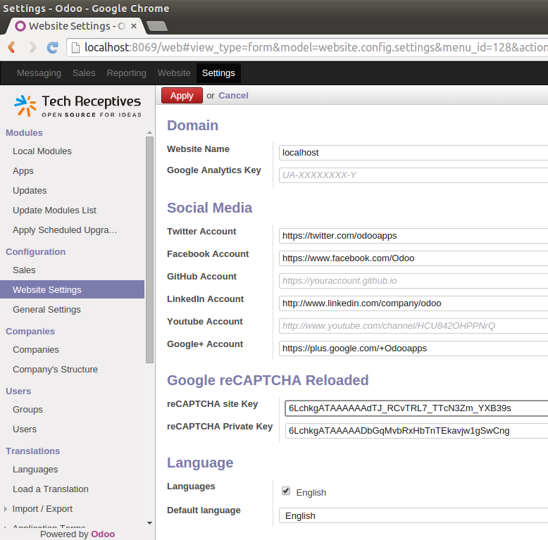

<section class="oe_container">
    <div class="oe_row">
        <h2 class="oe_slogan">Odoo Website reCAPTCHA Reloaded</h2>
        <h4 class="oe_slogan"><a href="https://www.techreceptives.com">By Tech Receptives</a></h4>
            <p>
                This modules allows you to integrate Google reCAPTCHA v2.0 to your website forms. You can configure your Google reCAPTCHA site and public keys in "Settings" -> "Website Settings".
            </p>

            <div class="oe_row_img oe_centered oe_mt32">
                
            </div>
    </div>
</section>
